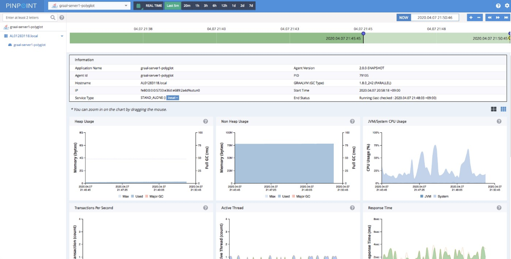

<div class="initial-content">
  <div id="main" role="main">

  <article class="page has-sidebar" itemscope itemtype="https://schema.org/CreativeWork">
    <meta itemprop="headline" content="Polyglot Application Observability">
    
    <meta itemprop="datePublished" content="2021-10-31T11:33:00+00:00">
    


    <header>
      <h1 id="page-title" class="page__title" itemprop="headline">Polyglot Application Observability
</h1>
      


    </header>

    <section class="page__content" itemprop="text">
      

        <p>Pinpoint (developed by <a href="https://www.navercorp.com/en">Naver</a>, South Korea’s largest web search engine company) is an APM (Application Performance Management) solution used by many organizations around the globe and actively used internally by Naver, where <strong>Pinpoint monitors over 10 billion transactions per day</strong>. This allows tracing transactions and data flows between multiple software components and identifies problematic areas along with potential bottlenecks.</p>

<h2 id="integration">Integration</h2>

<p>The Pinpoint team developed a GraalVM agent using the <a href="https://docs.oracle.com/en/graalvm/enterprise/21/docs/graalvm-as-a-platform/language-implementation-framework/">Truffle API</a>. GraalVM provides a faster runtime for applications and access to Truffle APIs to get access to the platform for enhancing interoperability.</p>

<p>The integration between GraalVM and Pinpoint (visualized below) shows the auto-instrumentation of a polyglot application written in Java and Node.js with a MySQL database backend.</p>

<p>To start using PinPoint and GraalVM for your applications, clone the following project from GitHub:</p>

<div class="language-plaintext highlighter-rouge"><div class="highlight"><pre class="highlight"><code>$ git clone https://github.com/RoySRose/pingraalPrerequisite GraalVM preinstalled.
</code></pre></div></div>

<h3 id="create-your-first-node">Create your first node</h3>

<ol>
  <li>
    <p>Create the instrument jar</p>

    <div class="language-plaintext highlighter-rouge"><div class="highlight"><pre class="highlight"><code> $ mvn clean install -DskipTests=true2. 
</code></pre></div>    </div>
  </li>
  <li>
    <p>Run server.js</p>

    <div class="language-plaintext highlighter-rouge"><div class="highlight"><pre class="highlight"><code> $ node server.js3. 
</code></pre></div>    </div>
  </li>
  <li>
    <p>Run first node.js file:</p>

    <div class="language-plaintext highlighter-rouge"><div class="highlight"><pre class="highlight"><code> $ ./simpletool node helloworld.js
</code></pre></div>    </div>
  </li>
</ol>

<p>After running these commands, you should be able to access the PinPoint dashboard.</p>

<h2 id="results">Results</h2>

<p>The results are displayed in three steps:</p>

<ol>
  <li>
    <p>The integration allows you to collect and visualize performance metrics of your application, such as heap/non-heap memory usage, CPU usage, active threads, response time, and others.</p>

    <p></p>
  </li>
  <li>
    <p>From the Callstack view you can dig deep into distributed call stacks of a particular transaction from multiple servers in one view:</p>

    <p></p>
  </li>
  <li>
    <p>The inspector collects the following information:</p>
    <ul>
      <li>Heap/Non-Heap Usage</li>
      <li>GraalVM/System CPU usage</li>
      <li>Transactions per second</li>
      <li>Active Threads</li>
      <li>Response Time</li>
      <li>Open File Descriptors</li>
      <li>Direct/Mapped Buffer</li>
      <li>Data source</li>
    </ul>

    <p></p>
  </li>
</ol>

<h2 id="summary">Summary</h2>

<p>This collaboration was done thanks to the efforts of the GraalVM Labs Engineering team (led by Thomas Wuerthinger) and also Roy Kim from Naver Labs and his Pinpoint team. The integration between GraalVM and Pinpoint helps us to see and understand the need for Polyglot Application Observability.</p>


          <div class="sidebar sticky">
    <!-- <p><strong>Tags:</strong> <span class="tags">

            
            <a class="animated-link tag" href="/topics/graalvm">graalvm</a>
            </span>
    </p> -->
  


<div itemscope itemtype="https://schema.org/Person">

  

  <div class="author__content">
    
      <h3 class="author__name" itemprop="name">Amitpal Singh Dhillon</h3>
    
    
      <div class="author__bio" itemprop="description">
        <p>Director at Oracle Labs, Product Management, Asia-Pacific &amp; Japan. Previously, from Sourcefire, Cisco Systems, and Applied Materials.</p>

      </div>
    
  </div>

  <div class="author__urls-wrapper">
    <ul class="author__urls social-icons">
      

      

      

      

      

      

      

      

      

      

      

      

      

      

      

      

      

      

      

      

      

      

      

      

      

      

      
    </ul>
  </div>
</div>

  
  
  

  </div>


      </section>

      <footer class="page__meta">
        
        


        

  <p class="page__date"><strong><i class="fas fa-fw fa-calendar-alt" aria-hidden="true"></i> Updated:</strong> <time datetime="2021-10-31T11:33:00+00:00">October 31, 2021</time></p>


      </footer>
    </div>

  </article>
</div>

</div>

